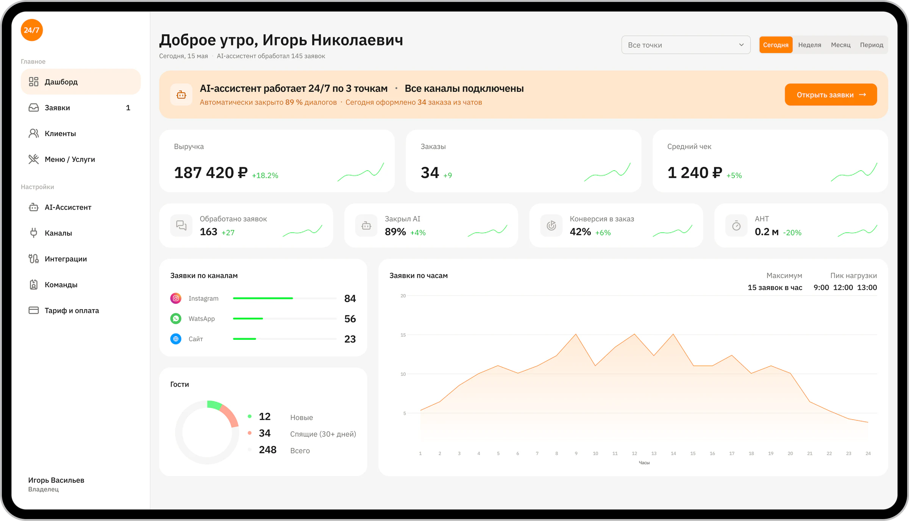
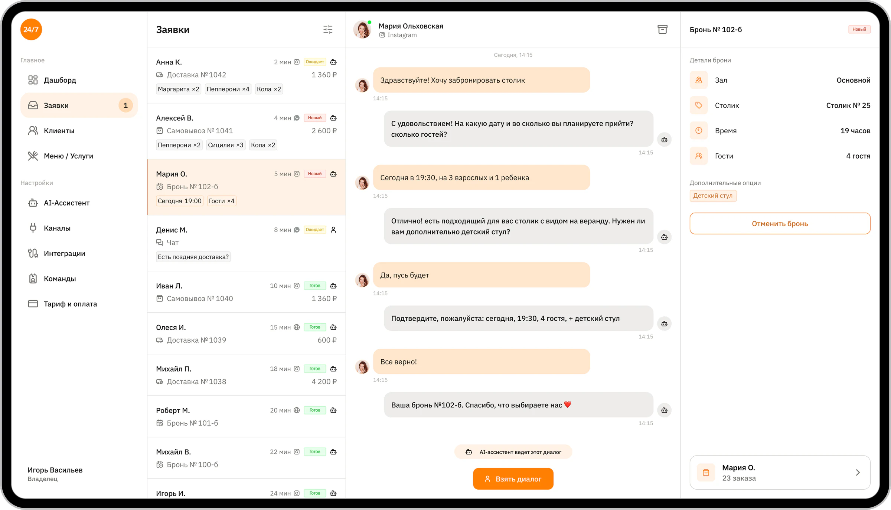
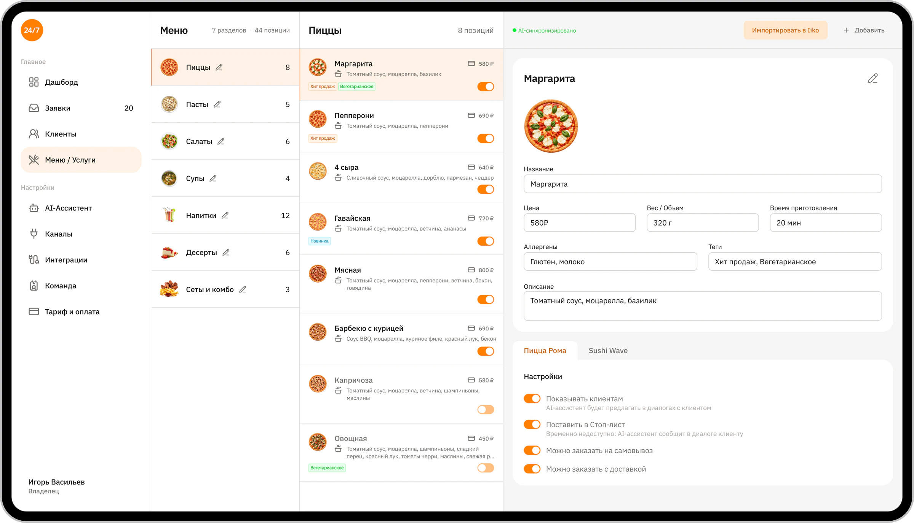
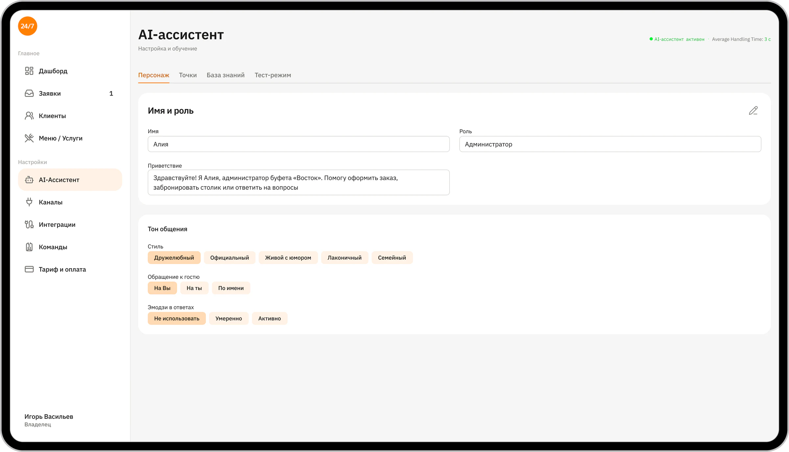
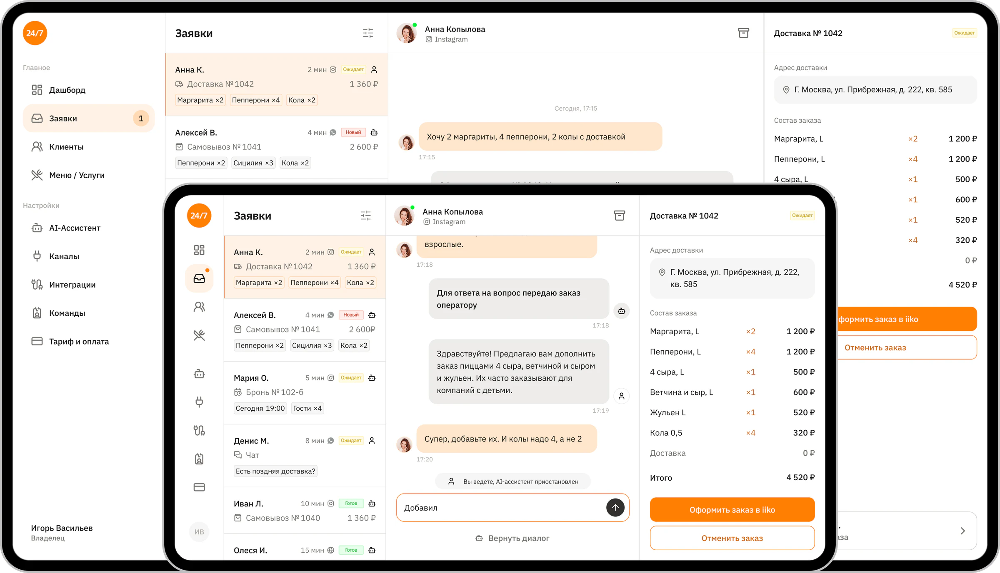

CRM онлайн-заказов
Спроектировала MVP CRM с AI-ассистентом
Какую проблему решала
Заказы из разных каналов приходилось обрабатывать вручную в нескольких сервисах — это замедляло работу и увеличивало число ошибок
0 → 1
MVP CRM с AI-ассистентом
10
Ключевых сценариев и дашборд
50+
Компонентов – ускорение разработки в 1,5–2,5 раза
Процесс
-
Исходные материалы
На старте проекта заказчик пришёл с уже сформированной идеей продукта и low-fidelity-прототипом
-
Ключевой экран
Работу начали с проработки страницы заказа — ключевого экрана системы. На нём сформировали визуальную концепцию продукта, определили основные UI-паттерны и принципы оформления
-
UI Kit
Параллельно с проектированием интерфейсов собирала UI Kit
-
Итерации
Проект развивался итерационно. После каждого этапа заказчик уточнял требования и вносил корректировки
-
Интерфейсы CRM
Спроектировала 10 основных сценариев CRM, включая пустые состояния, и адаптации для ширины 1920 и 1280 px
-
Лендинг и разработка
Финальным этапом стал дизайн промо-лендинга CRM в десктопной и мобильной версиях
Метрики после релиза
Продукт находится в разработке, поэтому фактических данных после релиза пока нет. После запуска я бы отслеживала следующие продуктовые и UX-метрики
Эффективность обработки заказов
| Метрика | Что показывает | Критерий успеха |
|---|---|---|
| Скорость принятия заказаTTA | Медианное время от поступления онлайн-заказа до первого действия оператора | TTA сокращается, а доля заказов, не принятых в установленный срок, снижается |
| Время обработки заказаAHT | Медианное время активной работы оператора с заказом: проверка данных, коммуникация с гостем и изменение статуса | AHT сокращается без роста ошибок, отмен и повторных обращений |
| Ошибки при обработке заказовOER | Доля заказов с неверным статусом, составом, рестораном, временем или контактными данными | OER и количество повторных ручных действий устойчиво снижаются |
| Автоматизация обращений AI-ассистентомACR | Доля диалогов, корректно завершённых AI-ассистентом без подключения оператора | ACR растёт, при этом не увеличиваются повторные обращения, исправления оператором и негативные оценки |
Использование CRM сотрудниками
| Метрика | Что показывает | Критерий успеха |
|---|---|---|
| Успешность ключевых сценариевTSR | Доля задач, выполненных оператором без ошибок и посторонней помощи: найти заказ, изменить статус, ответить гостю или уточнить данные | TSR растёт, а доля прерванных сценариев и обращений за помощью снижается |
| Эффективность поиска и фильтровFUR | Использование фильтров по статусу, типу заявки, каналу, ресторану и периоду, а также результативность поиска | Операторы быстрее находят нужные заказы, используют меньше лишних действий, а доля поисков без результата снижается |
| Использование дашбордаDashboard Usage | Доля операторов и управляющих, которые используют дашборд для контроля показателей и перехода к заказам, требующим внимания | Пользователи регулярно переходят из дашборда к целевым действиям, а не ограничиваются просмотром показателей |
| Освоение CRMTTC | Время, необходимое новому сотруднику для самостоятельного выполнения основных рабочих сценариев | TTC, количество ошибок в первых заказах и число обращений к наставнику сокращаются |
Макеты основных экранов

Спроектировала главный экран CRM с нуля: у заказчика ещё не было определённого видения дашборда. Изучила процессы работы ресторанов и похожие решения, выбрала метрики для ежедневного контроля: выручку, заказы, средний чек и эффективность AI-ассистента.
Собрала на одном экране загрузку по часам, распределение заявок по каналам и базовую аналитику по клиентам, чтобы дать команде обзор работы ресторана.

На экране заявок сформировала визуальный стиль и основные принципы взаимодействия с CRM. Проработала карточку заявки: выделила ключевые данные, статус и тип обращения, сохранив место для диалога.
После нескольких итераций с PM уточнила структуру карточки и иерархию информации. Стремилась сделать экран информативным, но визуально лёгким для работы с большим потоком обращений.

Спроектировала работу с большим меню через двойную группировку: категории → блюда. Справа разместила информацию и настройки выбранной позиции, а переключение между точками вынесла во вкладки внизу панели.
Проработала создание и редактирование блюд, включая доступность для разных филиалов. Дополнительные настройки перенесла в модальные окна, чтобы не перегружать основной экран.

Разделила настройки AI-ассистента на четыре вкладки: персонаж, точки, база знаний и тестовый режим. Такая структура помогает последовательно настроить ассистента под особенности ресторана. Здесь показала одну вкладку — остальные спроектировала по тем же принципам.

Спроектировала интерфейс для 1920 px и адаптировала его под 1280 px. В компактной версии сделала боковое меню раскрывающимся поверх списка заявок, чтобы сохранить место для диалога и данных заказа.
Выбрала этот компромисс, потому что меню используется эпизодически, а основная работа происходит в карточке заявки.